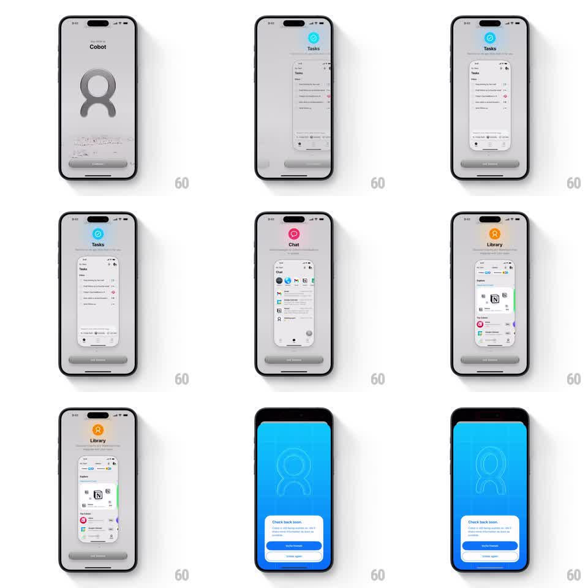

Media
Frame-by-frame

Rebuild this interaction 1:1: an onboarding value-prop carousel - each slide pairs a floating 3D icon + mini app screenshot with a title, and swiping between slides crossfades the full background tint (blue, pink, amber) while cards snap with spring physics.

Rebuild this interaction 1:1: an onboarding value-prop carousel - each slide pairs a floating 3D icon + mini app screenshot with a title, and swiping between slides crossfades the full background tint (blue, pink, amber) while cards snap with spring physics. ## Integration Integration: stack-agnostic spec - springs given as stiffness/damping, timed motions as duration + curve; map every value to your framework and animation library of choice. ## Scene Light onboarding screen: circular 3D icon (glossy, floating with soft shadow) top center, slide title + subline, a mini phone screenshot of the feature mid-frame, page dots, primary CTA pinned bottom. Background is a near-white tint of the slide's accent color. ## Motion spec Pattern: gesture carousel with color sync + icon float. - Icon idles with a slow float (translateY +-6px, 3s ease-in-out) and a barely-there rotation (+-2deg). - Swipe: slide content tracks 1:1; on release snaps to the nearest slide (spring ~280/24). - Background tint interpolates between slide accent colors by drag progress (live, not post-snap); the 3D icon also swaps: outgoing scales 1 -> 0.6 + fades (200ms), incoming scales 0.6 -> 1 with spring overshoot (300/18) starting at 50% crossing. - Mini screenshot parallaxes at 0.85x drag speed; title/subline crossfade with a 6px vertical shift (200ms). - Page dots: active dot is a pill; progress-driven width. ## Calibration - Two motion layers must stay in sync: color (continuous) and icon swap (discrete at 50%). - The idle float pauses during drags, resumes after settle. ## Reduced motion Slides swap with a 200ms crossfade; icons static; background switches after settle. ## Don't miss - Icon shadow floats with the icon - shadow blur grows as the icon rises. - Accent color appears in exactly three places: background tint, icon, active dot.